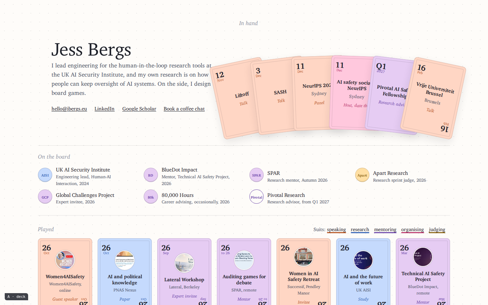
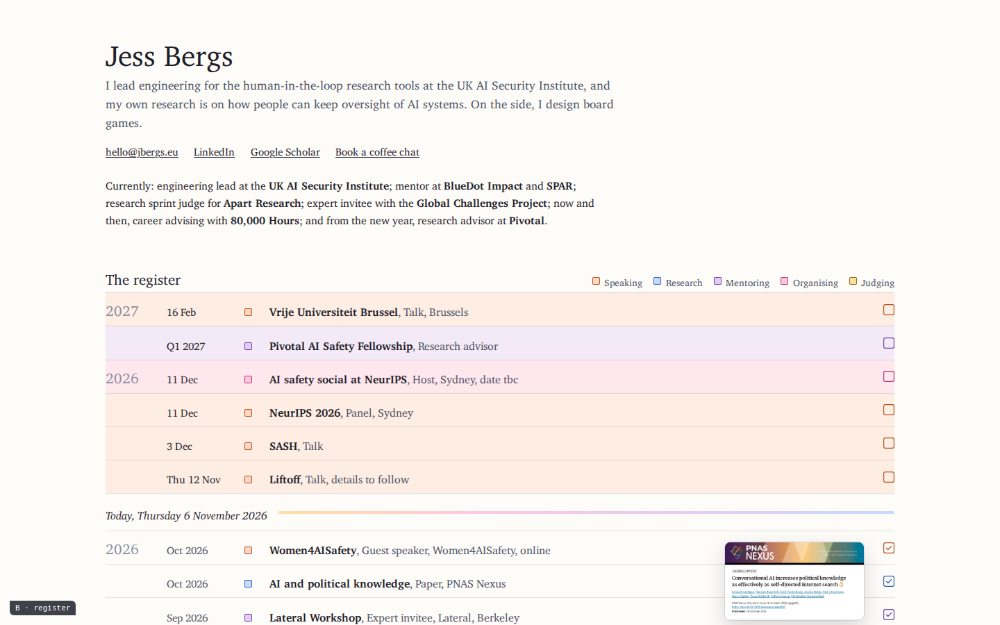
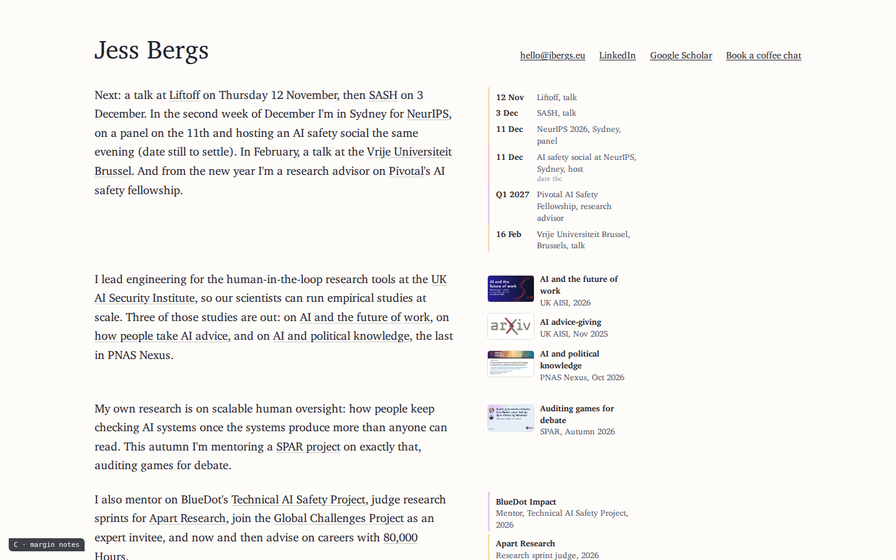
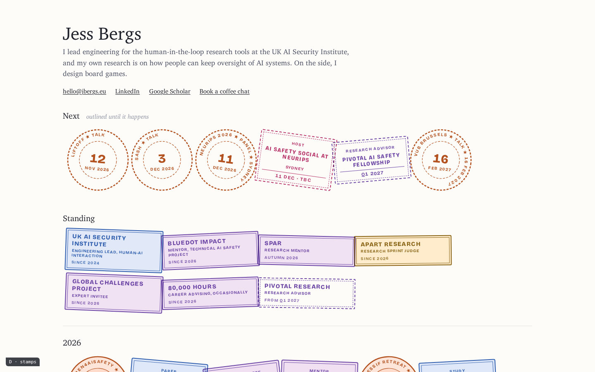
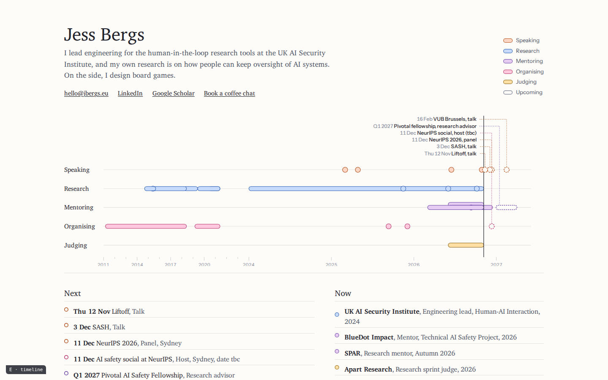

Homepage concepts, round two
Five different answers to what an entry on the page is. Each keeps Charter and the frame; each has one idea. Notes on the thinking are in notes.md in this folder.

A · Deck
Playing cards. Upcoming is the hand; roles are tokens; past work is the cards played, with a small crest instead of a banner.
full pagephone


B · Register
One ruled register with a today line. Open boxes above, ticked below. Thumbnails only on hover.
full pagephone


C · Margin notes
No hero. One short piece of writing, with dates, figures and roles in the margin beside the sentences.
full pagephone


D · Stamps
A passport. Talks are circles, the rest rectangles, standing roles are visas. Upcoming stamps are outlined, not yet inked.
full pagephone


E · Timeline
The hero is a chart of the career in five lanes. Today is a line; what comes after it is hollow.
full pagephone